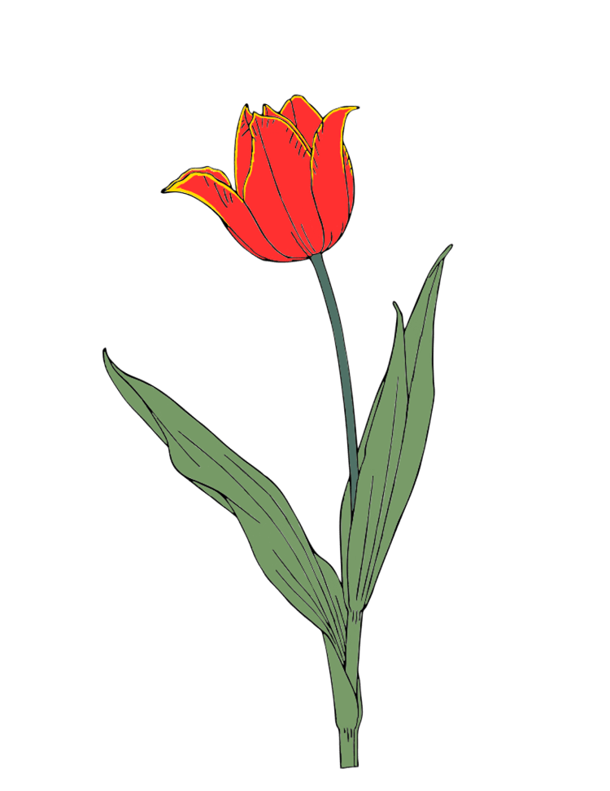

Тюльпан Шренка (Tulipa schrenkii)
Короткий опис: рідкісний вид тюльпанів з червоно-жовтими пелюстками.

Про квітку
Тюльпан Шренка — елегантна квітка, що росте на луках, степах та гірських схилах. Його пелюстки мають унікальне поєднання червоного та жовтого, що робить рослину яскравим акцентом у природному середовищі.
Ця квітка символізує енергію, життєрадісність та витривалість. В природі тюльпан Шренка рідкісний, тому його охороняють, щоб запобігти зникненню виду.
У культурі його використовують для декоративного озеленення садів і парків. Рослина привертає увагу комах-запилювачів і цінується ботаніками та колекціонерами рідкісних видів.